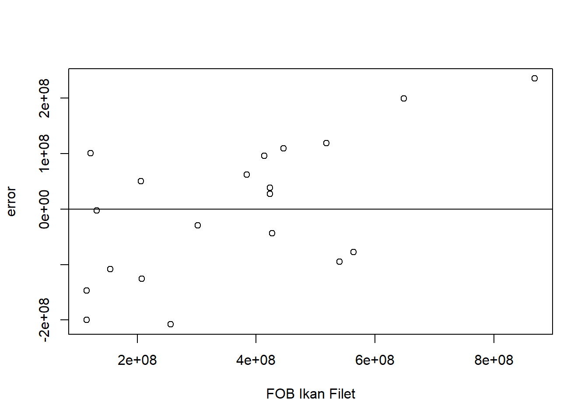
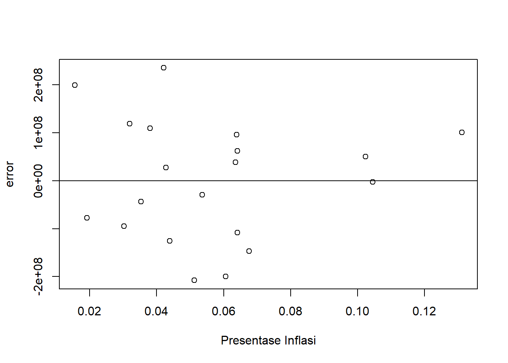
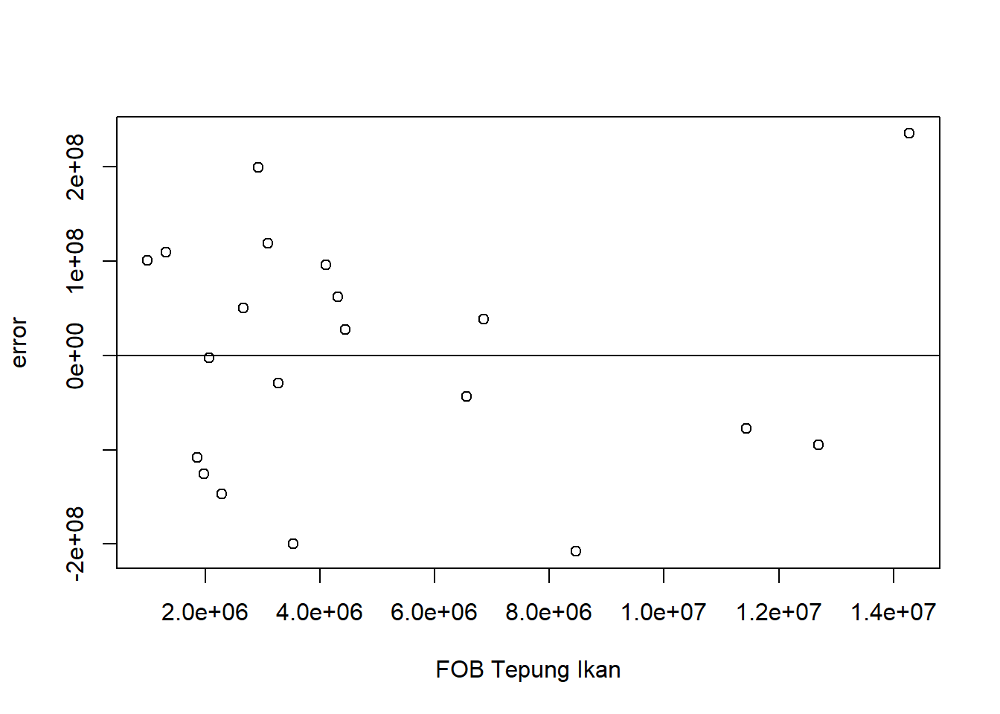

setwd("D:/METOPEL UAS/SAY METOPEL")
library(tidyverse)
library(readxl)
library(kableExtra)Analisis Hubungan Inflasi dan Pengaruhnya Terhadar Ekspor Ikan Filet serta Tepung Ikan
Metode Penelitian Politeknik APP Jakarta

1 Pendahuluan
1.1 Latar belakang
Indonesia, sebagai negara kepulauan terbesar di dunia, memiliki potensi besar dalam sektor perikanan. Salah satu komoditas yang diekspor adalah daging ikan filet (pos 0304) dan juga residu hasil dari sisa-sisa pengolahan ikan filet yang dapat dimanfaatkan menjadi tepung ikan (pos 2301). Namun demikian dalam hal ekspor suatu komoditas banyak faktor yang dapat mempengaruhi lancarnya proses agar komoditas ini menarik untuk dibeli, salah satunya adalah inflasi.
Inflasi merupakan fenomena ekonomi yang ditandai dengan kenaikan harga-harga secara umum dan terus menerus. Inflasi dapat mempengaruhi nilai tukar mata uang, yang pada gilirannya dapat mempengaruhi ekspor. Ketika inflasi tinggi, nilai tukar mata uang cenderung melemah, yang dapat membuat produk ekspor menjadi lebih mahal di pasar internasional dan berpotensi menurunkan permintaan.
Penelitian ini bertujuan untuk memahami lebih lanjut tentang bagaimana inflasi mempengaruhi ekspor. Hasil dari penelitian ini diharapkan dapat memberikan wawasan yang berharga bagi para pembaca khususnya pelaku usaha ekspor di komoditas yang menjadi bahasan dalam penelitian ini agar dapat merumuskan strategi yang tepat untuk menghadapi inflasi dan meningkatkan ekspor.
1.2 Ruang lingkup
Penelitian ini berfokus pada sektor perikanan Indonesia, yang memiliki permintaan ekspor yang tinggi di pasar internasional, terutama untuk komoditas laut. Negara ini dikenal dengan kekayaan sumber daya lautnya, dan telah berhasil memanfaatkan potensi ini untuk memenuhi permintaan global.
Selain itu, penelitian ini juga menyoroti bagaimana Indonesia dapat memanfaatkan limbah hasil pengolahan komoditas utama menjadi produk bernilai ekspor yang cukup tinggi. Ini menunjukkan komitmen negara ini terhadap praktik berkelanjutan dan efisiensi sumber daya, sekaligus membuka peluang baru untuk pertumbuhan ekonomi.
Namun, tantangan yang dihadapi adalah inflasi, yang dapat mempengaruhi daya saing produk ekspor di pasar internasional. Ketika inflasi tinggi, nilai tukar mata uang cenderung melemah, yang dapat membuat produk ekspor menjadi lebih mahal dan berpotensi menurunkan volume ekspor.
Untuk memahami lebih lanjut tentang hubungan ini, penelitian ini secara khusus meneliti pengaruh inflasi terhadap ekspor dua komoditas yang saling berkaitan. Metode yang digunakan dalam penelitian ini adalah analisis regresi multivariat, yang memungkinkan peneliti untuk memahami hubungan antara variabel-variabel ini dalam konteks yang lebih luas.
Dengan demikian, ruang lingkup penelitian ini mencakup analisis permintaan ekspor, pemanfaatan limbah menjadi Tepung Ikan, pengaruh inflasi terhadap ekspor dengan menggunakan metode analisis regresi multivariat.
1.3 Rumusan masalah
Bagaimana pengaruh inflasi terhadap ekspor komoditas laut, khususnya daging ikan filet dan tepung ikan, di Indonesia?
Apakah ada hubungan signifikan antara inflasi dan penurunan volume ekspor di Indonesia?
Bagaimana metode analisis regresi multivariat dapat digunakan untuk memahami hubungan antara inflasi dan ekspor?
1.4 Tujuan dan manfaat penelitian
Penelitian ini bertujuan untuk memahami pengaruh inflasi terhadap ekspor komoditas laut, khususnya daging ikan filet dan tepung ikan, di Indonesia dan mengetahui hubungan antara inflasi dan volume ekspor di Indonesia. Selain itu, penelitian ini juga menggunakan metode analisis regresi multivariat untuk memahami hubungan antara inflasi dan ekspor. Manfaat penelitian ini bagi mahasiswa sangat signifikan. Penelitian ini dapat membantu mahasiswa memperluas wawasan mereka tentang dinamika ekonomi, khususnya dalam konteks inflasi dan ekspor. Melalui penelitian ini, mahasiswa dapat memperdalam pengetahuan mereka tentang bagaimana inflasi mempengaruhi ekspor, dan bagaimana analisis data dapat digunakan untuk memahami fenomena ekonomi ini. Penelitian ini juga memberikan kesempatan bagi mahasiswa untuk belajar cara membaca, menganalisis, dan menyajikan data dengan menggunakan metode analisis regresi multivariat. Dengan terlibat dalam penelitian ini, mahasiswa dapat mengembangkan keterampilan penelitian mereka, yang akan sangat berguna dalam studi lanjutan dan karir profesional mereka.
1.5 Package
2 Studi pustaka
Menurut (Bishop,2010) Inflasi adalah kejadian ekonomi yang sering terjadi meskipun kita tidak pernah menghendaki. Milton Friendman mengatakan “inflasi bisa terjadi dimana saja dan selalu merupakan fenomena moneter”.
(Ibrahim, 2013) Diangggap fenomena moneter karena terjadinya penurunan nilai unit perhitungan moneter terhadap suatu komoditas. Ekonom Keynesian meyakini inflasi dapat terjadi secara independen dari kondisi moneter. Jika didefinisikan, inflasi adalah kenaikan harga barang dan jasa secara umum dan terus menerus.
(Rahardja dan Manurung, 2008) Inflasi terjadi jika terjadi kenaikan harga, bersifat umum, berlangsung secara terus menerus terjadi secara bersamaan.
Ekspor menurut keputusan mentri perindustrian dan perdagangan Nomor 182/MPP/Kep/4/1998 ketentuan umum di Bidang Ekspor, menyatakan bahwa ekspor merupakan kegiatan mengeluarkan barang dan jasa dari daerah pabean suatu negara. Adapun daerah pabean di definisikan sebagai wilayah Republik Indonesia yang meliputi wilayah darat, perairan dan ruang udara di atasnya, serta tempat-tempat tertentu di zona ekonomi eksklusif dan landas kontinen yang di dalamnya berlaku undang undang No.10 tahun 1995 tentang Kepabean.
Menurut definisi lain, ekspor merupakan penjualan barang dan jasa secara luas dari dalam negeri ke luar negeri (Mankiw, 2006).
Sedangkan menurut Priadi (2000) kegiatan ekspor merupakan sistem perdagangan yang dilakukan dengan cara mengeluarkan barang-barang dari dalam negeri ke luar negeri berdasarkan ketentuan yang berlaku.
Dikaji dari sisi manfaat, Menurut Sukirno (2010), manfaat dari kegiatan ekspor adalah : 1. Memperluas Pasar bagi Produk Indonesia ke luar negeri. 2. Menambah Devisa Negara 3. Memperluas Lapangan Kerja
Menurut Purba (2011) suatu negara cenderung mengekspor barang yang diperlukan atau tidak dapat dihasilkan negara tersebut.
Menurut Salvatore (1997) ada beberapa manfaat yang diperoleh dari perdagangan internasional yaitu: a. Suatu negara dapat memperoleh komoditas yang tidak mampu diproduksi di dalam negeri atau mengalami keterbatasan produksi. b. Suatu negara dapat memperoleh keuntungan melalui spesialisasi yaitu dapat mengekspor komoditi yang di produksi dengan harga lebih murah untuk ditukar dengan komoditi unggulan negara lain. Dengan tujuan untuk menekan biaya produksi sendiri yang mahal. c. Suatu negara dapat memperluas pasar produk, menambah pendapatan nasional, meningkatkan upah pekerja, menghasilkan devisa, serta dapat memperoleh kemajuan teknologi yang tidak tersedia di dalam negeri melalui perdagangan internasional.
3 Metode penelitian
3.1 Data
| tahun | inflasi | filet | tepung |
|---|---|---|---|
| 2003 | 0,0676 | 114783000 | 2291000 |
| 2004 | 0,0606 | 115186000 | 3543000 |
| 2005 | 0,1045 | 131800000 | 2074000 |
| 2006 | 0,1311 | 121179000 | 993000 |
| 2007 | 0,0641 | 154889000 | 1863000 |
| 2008 | 0,1023 | 206083000 | 2662000 |
| 2009 | 0,0439 | 207295000 | 1982000 |
| 2010 | 0,0513 | 256235000 | 8468000 |
| 2011 | 0,0536 | 302133000 | 3279000 |
| 2012 | 0,0428 | 423213000 | 4447000 |
| 2013 | 0,0641 | 384058000 | 4313000 |
| 2014 | 0,0639 | 413555000 | 4110000 |
| 2015 | 0,0636 | 423078000 | 6855000 |
| 2016 | 0,0353 | 427299000 | 6555000 |
| 2017 | 0,0381 | 445779000 | 1323000 |
| 2018 | 0,0320 | 518074000 | 3097000 |
| 2019 | 0,0303 | 540041000 | 12695000 |
| 2020 | 0,0192 | 563982000 | 11441000 |
| 2021 | 0,0156 | 648455000 | 2923000 |
| 2022 | 0,0421 | 868586000 | 14275000 |
Penelitian ini menggunakan data time series yang kemudian diproses menggunakan metode regresi multivariat untuk melihat hubungan antara besaran nilai Inflasi (X) terhadap nilai Ekspor Daging Ikan Filet (Y) yang disertai dengan Tepung Ikan (S).
3.2 Metode analisis
Metode yang dipilih adalah regresi Multivariat dengan lebih dari satu variabel independen. Penelitian ini merbaksud mencari hubungan antara Inflasi dengan Ekspor Ikan Filet dan Tepung Ikan. Spesifikasi yang dilakukan adalah:
\[ Y=\beta_0 + \beta_1 X+\beta_2 S+\mu_. \] di mana \(Y\)=Nilai FOB Ikan Filet, \(X\) = Presentase Inflasi dan \(S\)=Nilai FOB Tepung Ikan .
4 Pembahasan
4.1 Pembahasan masalah
Pada bagian ini dapat ditampilkan data dan visualisasi data yang telah dikumpulkan.
#impor dataset
read_excel("TPI1.xlsx")# A tibble: 20 × 4
tahun inflasi filet tepung
<dbl> <dbl> <dbl> <dbl>
1 2003 0.0676 114783000 2291000
2 2004 0.0606 115186000 3543000
3 2005 0.104 131800000 2074000
4 2006 0.131 121179000 993000
5 2007 0.0641 154889000 1863000
6 2008 0.102 206083000 2662000
7 2009 0.0439 207295000 1982000
8 2010 0.0513 256235000 8468000
9 2011 0.0536 302133000 3279000
10 2012 0.0428 423213000 4447000
11 2013 0.0641 384058000 4313000
12 2014 0.0639 413555000 4110000
13 2015 0.0636 423078000 6855000
14 2016 0.0353 427299000 6555000
15 2017 0.0381 445779000 1323000
16 2018 0.032 518074000 3097000
17 2019 0.0303 540041000 12695000
18 2020 0.0192 563982000 11441000
19 2021 0.0156 648455000 2923000
20 2022 0.0421 868586000 14275000dat <- read_excel("TPI1.xlsx")
kbl(dat) %>%
kable_styling(bootstrap_options = c("striped", "hover", "condensed", "responsive"))| tahun | inflasi | filet | tepung |
|---|---|---|---|
| 2003 | 0.0676 | 114783000 | 2291000 |
| 2004 | 0.0606 | 115186000 | 3543000 |
| 2005 | 0.1045 | 131800000 | 2074000 |
| 2006 | 0.1311 | 121179000 | 993000 |
| 2007 | 0.0641 | 154889000 | 1863000 |
| 2008 | 0.1023 | 206083000 | 2662000 |
| 2009 | 0.0439 | 207295000 | 1982000 |
| 2010 | 0.0513 | 256235000 | 8468000 |
| 2011 | 0.0536 | 302133000 | 3279000 |
| 2012 | 0.0428 | 423213000 | 4447000 |
| 2013 | 0.0641 | 384058000 | 4313000 |
| 2014 | 0.0639 | 413555000 | 4110000 |
| 2015 | 0.0636 | 423078000 | 6855000 |
| 2016 | 0.0353 | 427299000 | 6555000 |
| 2017 | 0.0381 | 445779000 | 1323000 |
| 2018 | 0.0320 | 518074000 | 3097000 |
| 2019 | 0.0303 | 540041000 | 12695000 |
| 2020 | 0.0192 | 563982000 | 11441000 |
| 2021 | 0.0156 | 648455000 | 2923000 |
| 2022 | 0.0421 | 868586000 | 14275000 |
reg1<-lm(data=dat,filet~inflasi+tepung)dat$m<-resid(reg1)
plot(dat$filet,dat$m,xlab="FOB Ikan Filet",ylab="error")
abline(h=0) # membuat garis horizontal di y=0
dat$m<-resid(reg1)
plot(dat$inflasi,dat$m,xlab="Presentase Inflasi",ylab="error")
abline(h=0)
dat$m<-resid(reg1)
plot(dat$tepung,dat$m,xlab="FOB Tepung Ikan",ylab="error")
abline(h=0)
4.2 Analisis masalah
Hasil regresinya adalah
reg1<-lm(data=dat,filet~inflasi+tepung) #Y~X+S
summary(reg1)
Call:
lm(formula = filet ~ inflasi + tepung, data = dat)
Residuals:
Min 1Q Median 3Q Max
-207692249 -98087607 12320756 96903491 235028987
Coefficients:
Estimate Std. Error t value Pr(>|t|)
(Intercept) 4.306e+08 9.887e+07 4.355 0.000431 ***
inflasi -3.307e+09 1.176e+09 -2.812 0.011999 *
tepung 2.397e+01 8.764e+00 2.735 0.014092 *
---
Signif. codes: 0 '***' 0.001 '**' 0.01 '*' 0.05 '.' 0.1 ' ' 1
Residual standard error: 132600000 on 17 degrees of freedom
Multiple R-squared: 0.6245, Adjusted R-squared: 0.5803
F-statistic: 14.14 on 2 and 17 DF, p-value: 0.0002423Dapat dilihat dari data hasil Regresi yang dihasilkan Inflasi menunjukan pengaruh negatif signifikan terhadap Ekspor Daging Ikan Filet, yang setiap kenaikan nilai Inflasi sebesar 1% akan mengakibatkan pengurangan nilai Ekspor Daging Ikan Filet sebesar -3.307%.
Kemudian, untuk ekspor tepung ikan sendiri hasil regresi menunjukan hasil yang sebagaimana mestinya. Yakni 1:2,397, yang artinya setiap kenaikan nilai ekspor Tepung ikan akan mengakibatkan nilai ekspor Daging Ikan Filet naik 2,3 kalinya.
5 Kesimpulan
Kesimpulan dari penelitian ini adalah biarpun tiap hal termasuk inflasi memiliki nilai positif maupun negatif jika dipandang dari sisi moneter, namun untuk hal ekspor di Indonesia inflasi dapat membahayakan neraca perdagangan di negara ini bilamana tidak ditanggulangi dengan kebijakan yang tepat.
Ekspor menjadi salah satu tonggak pununjang ekonomi di Indonesia, dengan semakin banyaknya pelaku usaha yang turut terjun ke bidang ini akan membawa dampak yang baik pada perekonomian.
Kemudian, dipilihnya komoditas Ikan filet dan Tepung ikan juga bukan tanpa alasan. Melihat pemerintah yang sedang gencar menggaungkan hilirisasi komoditas yang mana bila kita melihat, untuk menghasilkan produk Ikan filet diperlukan proses pengolahan terlebih dahulu dari Ikan segar utuh, itu sudah termasuk hilirisasi yang dapat menambah nilai ekonomis dari sebuah produk. Dan tepung ikan juga yang merupakan hasil limbah dari proses pengolahan ikan filet seperti tulang-tulang ikan, kepala ikan, organ, dan lain-lainnya yang mungkin akan berakhir di tempat pembuangan akhir, namun ini di olah kembali agar dapat mengurangi limbah yang mencemari lingkungan serta memiliki nilai ekonomis kembali.
6 Referensi
Mathew Bishop, Ekonomi Panduan Lengkap dari A-Z, ( Yogyakarta: Baca!, 2010), 157.
Zaini Ibrahim, Pengantar Ekonomi Makro Edisi Revisi, (Serang: Lembaga Penelitian dan Pengabdian Kepada Masyarakat (LP2M) IAIN Sultan Maulana Hasanuddin Banten, 2013), 97.
Pratama Rahardja dan Mandala Manarung, Teori Ekonomi Makro Suatu Pengantar Edisi Keempat, (Jakarta: Lembaga Penerbit Fakultas Ekonomi Universitas Indonesia, 2008), 165.
Mohamad Nizar Firmansyah. (2020). Analisis Ekspor Impor tehadap Daya Beli Masyarakat. UIN Maulana Malik Ibrahim. Malang, Jawa Timur.
Sadono Sukiro, Makro Ekonomi Modern, (Jakarta: PT raja Grafindo Persada, 2007), 484.
Irfan Fahmi, Pengantar Politik Ekonomi, (Bandung: Alfabeta, 2010), 104